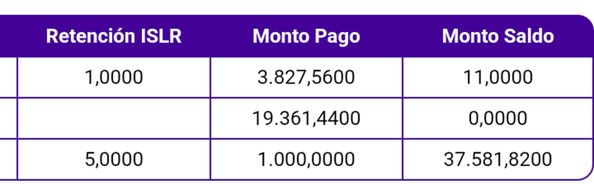
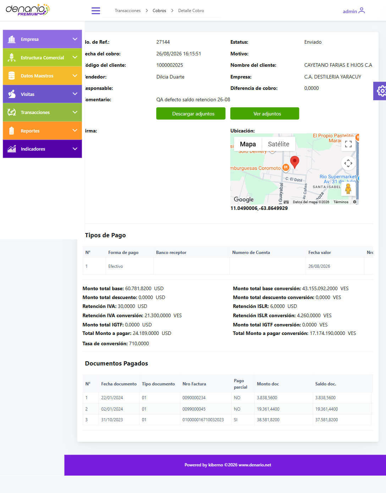

CORRECCIÓN DE INFORMEControl de Calidad
26 de agosto de 2026
26 de agosto de 2026
Corrige el informe «Fix Monto Doc. en pago parcial — validación completa» del 26/08/2026
| Cliente | CENTRAL EL PALMAR, S.A. el_palmar |
| Playa | ISLA COCHE |
| Módulo | Cobros — Tab TOTAL |
| Naturaleza | Defecto preexistente — no lo introdujo el fix 54af300e |
| Alcance | App móvil · dato enviado al servidor · web administrativa |
Cuando un documento lleva retención, la deuda del cliente baja por el pago más lo retenido. La aplicación solo descuenta el pago, de modo que el saldo pendiente queda inflado exactamente en el monto retenido.
Las tres filas pertenecen al mismo cobro y a la misma tabla. La del medio no lleva retención y cierra correctamente en cero. Las otras dos sí llevan retención y no cierran. La única variable es la retención.

| Caso | Saldo del doc. | Pago | Retenido | Muestra | Debería | Infla |
|---|---|---|---|---|---|---|
| Cobro con retención pago completo |
3.838,56 | 3.827,56 | 11,00 | 11,0000 | 0,0000 | 11,00 |
| Parcial con retención el que se dio por bueno |
38.581,82 | 1.000,00 | 25,00 | 37.581,8200 | 37.556,8200 | 25,00 |
| Control — sin retención | 19.361,44 | 19.361,44 | — | 0,0000 | 0,0000 | 0 |
El primer caso es el más claro: el cliente saldó el documento por completo —3.827,56 pagados más 11,00 retenidos son exactamente los 3.838,56 que debía— y la aplicación sigue mostrando 11,00 pendientes.
Los cobros se enviaron y se consultó lo que quedó guardado en la nube. En el cobro con pago parcial, el saldo restante que se persiste tampoco descuenta la retención:
| Documento | Saldo | Pago | Retenido | Guardado en la nube | Debería |
|---|---|---|---|---|---|
010000016710032023 | 38.581,82 | 1.000,00 | 25,00 | 37.581,8200 | 37.556,8200 |
Esto sube la gravedad del hallazgo: no es un problema de presentación. El saldo pendiente que llega al servidor queda sobrestimado en el monto retenido, y sobre ese dato trabajan después los procesos de cobranza.
Se consultó el cobro en la web administrativa. El detalle tiene una columna «Saldo doc.» que muestra exactamente el mismo número equivocado. El defecto no se queda en el teléfono del vendedor: llega a la pantalla que usa la oficina.
| Documento | Parcial | Monto doc | Saldo doc. (web) | Retenido | Debería |
|---|---|---|---|---|---|
010000016710032023 | SÍ | 38.581,8200 | 37.581,8200 | 25,00 | 37.556,8200 |
0099000045 control | NO | 19.361,4400 | 19.361,4400 | — | 19.361,4400 |

Se montó también un cobro cuyo tipo es Retención. Ese flujo no tiene columna de saldo: presenta un acordeón por documento con el monto del documento, las retenciones y el total retenido, y su «Monto total a Pagar» es correcto. No aplica el defecto, y así queda documentado.
| Caso | Resultado |
|---|---|
| Cobro con retención | ❌ DEFECTO saldo inflado en lo retenido |
| Parcial con retención | ❌ DEFECTO corrige el resultado anterior |
| Retención como tipo de cobro | 🚫 N/A ese flujo no tiene columna de saldo |
| Control sin retención | ✅ correcto aísla la causa |
Es importante dejarlo escrito, porque la causa es corregible y afecta a otras validaciones:
| # | Causa | Corrección adoptada |
|---|---|---|
| 1 | Se comprobó que saldo − pago = saldo mostrado, que es exactamente la fórmula del código. Se validó el cálculo contra sí mismo en vez de contra la deuda real del cliente | El criterio pasa a ser la regla de negocio, no la fórmula implementada |
| 2 | La captura publicada como prueba no mostraba la columna «Monto Saldo»: con retención aparecen columnas adicionales y la tabla se desplaza | Toda captura debe contener las columnas citadas en el texto; si no caben, recortes solapados |
| 3 | No hubo caso de control sin retención con el que comparar | Todo escenario con una variable añadida lleva su control |
1000002025.defecto_saldo_retencion_20260826. Detalle técnico, mediciones de modelo y trazas en
defecto-saldo-retencion.md. Cobros de evidencia: 27143 y 27144.